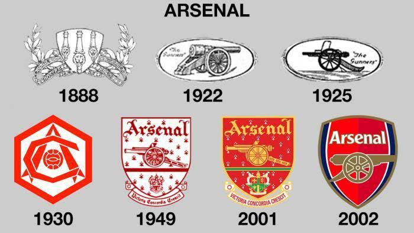

Los primeros años
El Arsenal se fundó en 1886 por trabajadores relacionados con el Royal Arsenal de Woolwich, al sureste de Londres. Con el tiempo se convirtió en uno de los clubes más conocidos de Inglaterra.
Un recorrido por el club de Londres

El Arsenal se fundó en 1886 por trabajadores relacionados con el Royal Arsenal de Woolwich, al sureste de Londres. Con el tiempo se convirtió en uno de los clubes más conocidos de Inglaterra.
En 1913 el club comenzó a jugar en Highbury. En 2006 se mudó al Emirates Stadium, su estadio actual.